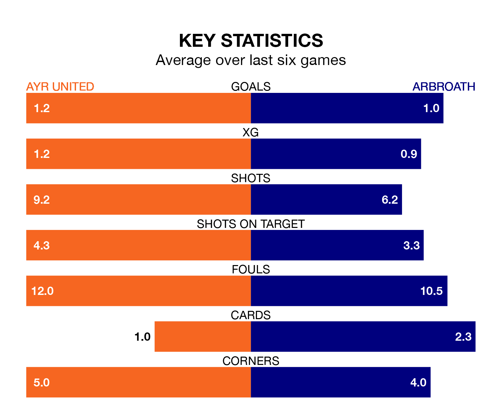

Saturday's match at Somerset Park sees two relegation candidates play each other, as seventh-ranked Ayr United host bottom of the table Arbroath.
Ayr have picked up 39 points from their first 39 Championship games, with 11 wins and six draws.
That is 16 points more than Arbroath have collected, having won six and drawn five.
Ayr are in mixed form in the Championship, with two wins and a draw from their last six games.
With no wins and six losses over that period, Arbroath's form is much worse – they have taken no points from 18, compared to United's seven.
With 34 goals in 32 games so far this season, the away side are the league's lowest scorers with 1.1 goals per game. And they are conceding more than average, letting in 72 goals at a rate of 2.2 per game.
The Honest Men, meanwhile, are average scorers, with 1.4 goals per game. They have conceded 1.8 goals per game.
In the last 10 years, Ayr and Arbroath have played each other on 20 occasions. Ayr won five of them, Arbroath eight, and they drew seven times.
On average, the Honest Men scored 1.1 goals and Arbroath 1.2 in those matches.
Their last meeting was on January 23, when Ayr won 2-0 at home.
The hosts' Jamie Murphy is among the league's most creative players, racking up 10 assists in 28 appearances so far this season, and holding second spot in the Championship's assist charts.
For Arbroath, Scott Stewart, Jay Bird and Michael McKenna have set up the most goals, having laid on three assists apiece to date.
Ayr's last match was on Tuesday, a 1-1 draw against Greenock Morton, with Anton Dowds getting the goal for the Honest Men.
Arbroath lost 2-1 against Inverness CT last time out, on April 6, with Leighton McIntosh on the scoresheet.
Saturday's match will be refereed by Scott Lambie, who has taken charge of three Championship games so far this season, issuing no red cards and booking nine players. He has not awarded any penalties.
The last Arbroath game Lambie refereed was the 1-0 loss at home against Queen's Park on August 19. He is yet to oversee a match featuring Ayr this season.
Updated: 10:01 (UTC), 12/04/24